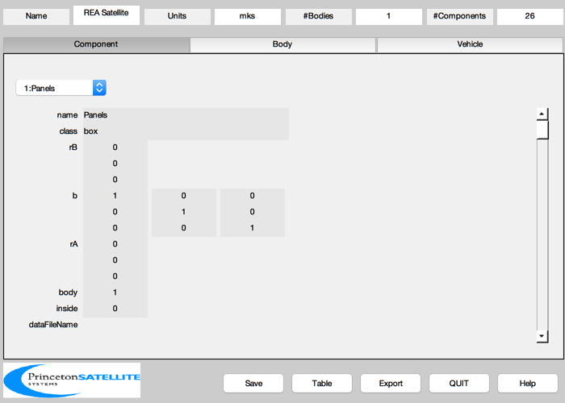

A very simple spacecraft with thrusters and one sensor.
This model is used in the demo REAControl. REA stands for Rocket Engine
Assembly, i.e. thrusters. The thrusters are defined by their position in
the body frame, r, and their thrust unit vector, u.
-------------------------------------------------------------------------
See also BuildCADModel, CreateBody, CreateComponent, QLVLH,
FindDirectory, SaveStructure
-------------------------------------------------------------------------
Contents
clear mass
Data
r = 7000;
v = sqrt(3.98600436e5/r);
rECI = [r;0;0];
vECI = [0;v;0];
qLVLH = QLVLH( rECI, vECI );
q = [1;0;0;0];
omega = [0;-v/r;0];
coreX = 1.0;
coreY = 1.0;
coreZ = 1.0;
corePosition = [0; 0; 0];
sTBoresight = [0;0;1];
sTLoc = [0.4;0.4;0.4];
mass.mass = 20;
mass.cM = [0;0;0];
mass.inertia = 10/3*eye(3);
Initialize
BuildCADModel( 'initialize' );
BuildCADModel( 'set name' , 'REA Satellite' );
BuildCADModel( 'set units', 'mks' );
BuildCADModel( 'set rECI' , rECI );
BuildCADModel( 'set vECI' , vECI );
BuildCADModel( 'set qLVLH', qLVLH );
BuildCADModel( 'set qECIToBody', q );
BuildCADModel( 'set omega', omega );
BuildCADModel( 'set mass', mass );
Create bodies first
m = CreateBody( 'make', 'name', 'Core' );
BuildCADModel('add body', m );
BuildCADModel( 'compute paths' );
Add Components
m = CreateComponent( 'make', 'box', 'x', coreX, 'y', coreY, 'z', coreZ,...
'faceColor', 'gold foil','inside',0,...
'rA', corePosition, 'mass', 10, 'name', 'Panels', 'body', 1 );
BuildCADModel( 'add component', m );
m = CreateComponent( 'make', 'camera', 'model', 'ct633',...
'unitVector', sTBoresight,'inside',0,...
'rA', sTLoc, 'name', 'Camera', 'body', 1, 'faceColor', 'aluminum' );
BuildCADModel( 'add component', m );
thrust = ones(1,24);
clear r
xPos1 = [ 0.5, 0.5, 0.5]; xPos2 = [ 0.5, 0.5, -0.5]; xPos3 = [ 0.5, -0.5, -0.5]; xPos4 = [ 0.5, -0.5, 0.5];
yPos1 = [ 0.5, 0.5, 0.5]; yPos2 = [-0.5, 0.5, 0.5]; yPos3 = [-0.5, 0.5, -0.5]; yPos4 = [ 0.5, 0.5, -0.5];
zPos1 = [ 0.5, 0.5, 0.5]; zPos2 = [ 0.5, -0.5, 0.5]; zPos3 = [-0.5, -0.5, 0.5]; zPos4 = [-0.5, 0.5, 0.5];
xNeg1 = [-0.5, 0.5, 0.5]; xNeg2 = [-0.5, 0.5, -0.5]; xNeg3 = [-0.5, -0.5, -0.5]; xNeg4 = [-0.5, -0.5, 0.5];
yNeg1 = [ 0.5, -0.5, 0.5]; yNeg2 = [-0.5, -0.5, 0.5]; yNeg3 = [-0.5, -0.5, -0.5]; yNeg4 = [ 0.5, -0.5, -0.5];
zNeg1 = [ 0.5, 0.5, -0.5]; zNeg2 = [ 0.5, -0.5, -0.5]; zNeg3 = [-0.5, -0.5, -0.5]; zNeg4 = [-0.5, 0.5, -0.5];
r = [xPos1; xPos2; xPos3; xPos4;...
yPos1; yPos2; yPos3; yPos4;...
zPos1; zPos2; zPos3; zPos4;...
xNeg1; xNeg2; xNeg3; xNeg4;...
yNeg1; yNeg2; yNeg3; yNeg4;...
zNeg1; zNeg2; zNeg3; zNeg4]';
u = -[[ 1, 0, 0]; [ 1, 0, 0]; [ 1, 0, 0]; [ 1, 0, 0];...
[ 0, 1, 0]; [ 0, 1, 0]; [ 0, 1, 0]; [ 0, 1, 0];...
[ 0, 0, 1]; [ 0, 0, 1]; [ 0, 0, 1]; [ 0, 0, 1];...
[-1, 0, 0]; [-1, 0, 0]; [-1, 0, 0]; [-1, 0, 0];...
[ 0, -1, 0]; [ 0, -1, 0]; [ 0, -1, 0]; [ 0, -1, 0];...
[ 0, 0, -1]; [ 0, 0, -1]; [ 0, 0, -1]; [ 0, 0, -1]]';
type = 'mr-103c';
for k = 1:length(thrust)
m = CreateComponent( 'make', 'hydrazine thruster', 'model', type, 'name', sprintf('Thruster %i',k),...
'body', 1, 'rA', r(:,k), 'unitVector', u(:,k), ...
'thrust', thrust(k), 'positionVector', r(:,k), ...
'pressureNominal',350*6895,'inside',0);
BuildCADModel( 'add component', m );
end

Get finished model and display
g = BuildCADModel( 'get cad model' );
BuildCADModel('show spacecraft');
dName = FindDirectory('SCModels');
SaveStructure( g, fullfile(dName,'SatWThrusters') )